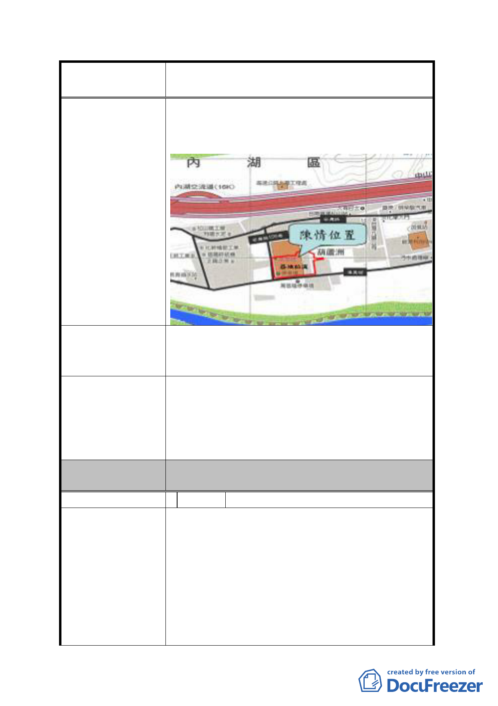

案名
變更臺北市內湖區蘆洲里附近部分工業區為
保護區、住宅區及道路用地主要計畫案
納入「變更臺北市內湖區蘆洲里附近部分工業區為
保護區、住宅區及道路用地主要計畫案」計畫範圍
內。
建議本陳情位置納入「變更臺北市內湖區蘆洲里附
建 議 辦 法 近部分工業區為保護區、住宅區及道路用地主要計
畫案」範圍內，以維陳情人權益。
陳情位置「變更臺北市內湖區潭美段 1 小段 405 地號
等 6 筆土地第二種工業區為科技工業區 A 區(特)及道
發 展 局 回 應 意 見 路用地細部計畫案」，業經都委會 98 年 12 月 25 日第
605 次委員會議審議通過，本府並以 99 年 2 月 4 日
府都規字第 09900054900 號公告實施。
委員會決議
該陳情位置已公告發布實施都市計畫案，非屬本計
畫案市地重劃範圍。
編 號 3 陳情人 方建富
一、
1.大樓於 86 年取得使用執照正式使用至今不到 10
年，拆除非常浪費。
2.目前營造費用高漲。
陳 情 理 由 3.大樓屬合法建物、用戶設備昂貴，搬遷不易。
4.本大樓位置與計劃道路、公共設施配置並未衝
突。
5.減少重劃負擔。
二、
- 14 -